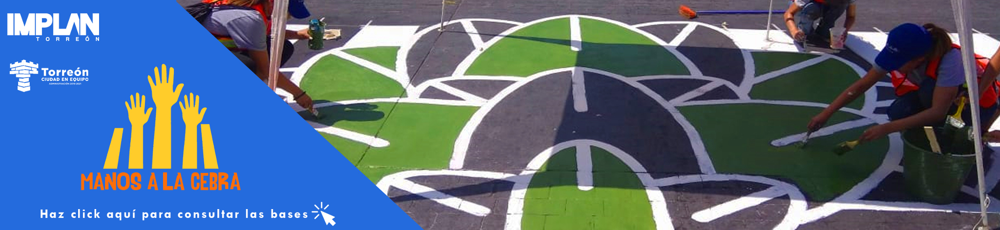

Convocatoria
Convocatorias Implan Torreón.
Por Implan Torreón -
19/08/2021 14:50

A estudiantes de arquitectura, diseño e ingeniería civil; artistas de La Laguna y ciudadanía en general, a participar en el 3er. Concurso Metropolitano de diseño y ejecución de pasos peatonales para las calles de Torreón, Coahuila: “Manos a la Cebra”
La Organización Mundial de la Salud instauró el 17 de agosto como Día Mundial del Peatón, fecha que conmemora la muerte de Bridget Driscoll, quien fue la primera persona atropellada por un automóvil en 1896 en Londres, Inglaterra. Dar prioridad a peatones es fundamental, como se establece en la Pirámide de la Movilidad, para promover la equidad, el beneficio social y el cuidado del medio ambiente.
Promover de forma activa y creativa la cultura vial y la participación ciudadana, resaltando la importancia de los derechos peatonales y su seguridad al caminar por las calles de Torreón.
1er. Lugar $ 7,000.00 2do. Lugar $ 5,000.00 3er. Lugar $ 3,000.00 Reconocimiento para todas y todos los participantes
¿Quiénes participan? Estudiantes de las carreras de arquitectura, diseño e ingeniería civil; artistas; así como sociedad en general. Equipos conformados de mínimo 5 integrantes. Sin embargo, esto no significa que no puedan contar con apoyo de más personas. Los equipos deberán estar inscritos en tiempo y forma en el concurso, según las fechas publicadas en esta convocatoria. Proceso de Inscripción - Registrarse en http://bit.ly/ManosALaCebraInscripcion - Nombrar a un/una representante: nombre, dejando su número de celular y correo electrónico (indispensable) - Identificar al equipo con un nombre y enlistar a sus integrantes (mínimo 5 personas) - Una vez completado el proceso de inscripción, se confirmará de recibido vía correo electrónico a la/el representante del equipo con No. de folio y un link para ingresar la propuesta de diseño del paso cebra - Enviar en PDF, la propuesta de diseño del cruce peatonal en tamaño tabloide, orientación horizontal, no mayor a 5 MB y una descripción del concepto de diseño (máximo 300 caracteres). Lineamientos de Diseño El diseño del paso de cebra deberá ser elaborado con base a la carta ilustrada de derechos del peatón de La Liga Peatonal https://bit.ly/CartaDerechoPeaton .No incluirá texto, imágenes o elementos que sirvan como propaganda política, comercial o religiosa. Ancho mínimo 3 metros. El diseño debe realizarse con las siguientes pinturas o la combinación de las mismas: amarillo canario, rojo, azul intenso, blanco y negro. El paso peatonal deberá concluirse en el horario establecido. Dinámica y criterios de evaluación Las propuestas recibidas que se apeguen a los lineamientos de diseño serán publicadas en un álbum de la página de Facebook “Manos a la Cebra” para pasar a la fase de votación. La ciudadanía deberá votar dando “me gusta” a la propuesta de su preferencia y mencionar por qué son importantes los derechos del peatón; imprescindible realizar ambos para contabilizar el voto. Las 10 propuestas con mayor votación serán las seleccionadas para ser ejecutadas. De los 10 proyectos ejecutados en la vialidad, se evaluará creatividad, originalidad, y concepto del diseño. El jurado estará conformado por profesionistas especializados en las áreas de arte, diseño, arquitectura y urbanismo. Será el propio jurado quien establezca el método de evaluación, mismo que seleccionará entre las 10 propuestas finalistas, a los 3 equipos ganadores del concurso. El fallo del jurado para designar a los equipos ganadores será inapelable.
Agosto 17: Día Mundial del Peatón, se abre convocatoria. Septiembre 13: A las 12:00 pm se cierra la convocatoria. Septiembre 16: Se publican los diseños e inicia votación en redes sociales. Septiembre 21: A las 12:00 pm se cierra votación en redes sociales. Septiembre 22: Se darán a conocer los 10 proyectos seleccionados a través del representante, así como la intervención vial, donde ejecutarán su propuesta. La asignación de cada crucero se hará de manera aleatoria. Septiembre 26: Día de la intervención de los 10 proyectos seleccionados.Horario: de 7:00 a.m. a 3:00 p.m. Septiembre 30: Se darán a conocer a los equipos ganadores y fecha de premiación.
Los equipos participantes conservarán los derechos de propiedad de los trabajos presentados, sin embargo, deberán ceder los derechos de reproducción, distribución y comunicación pública de sus diseños para que permitan la exposición y publicación correspondiente a los objetivos del concurso.
Dirección de Movilidad no Motorizada Tel. 871 500 7107, Ext. 2357 Primer piso del Antiguo Banco de México Avenida Morelos 1217, Colonia Centro, Torreón, Coahuila. movnomot2019@gmail.com Instituto Municipal de Planeación y Competitividad de Torreón Tel. 871 500 7000, Ext. 2317 Segundo piso del Antiguo Banco de México Avenida Morelos 1217, Colonia Centro, Torreón, Coahuila. proyectosestrategicos@trcimplan.gob.mx BASES https://www.trcimplan.gob.mx/convocatorias/convocatoria-manos-a-la-cebra-2021.pdf
Instituto Municipal de Planeación y Competitividad de Torreón
Órgano técnico responsable de la planeación del desarrollo del municipio de Torreón, Coahuila, México.